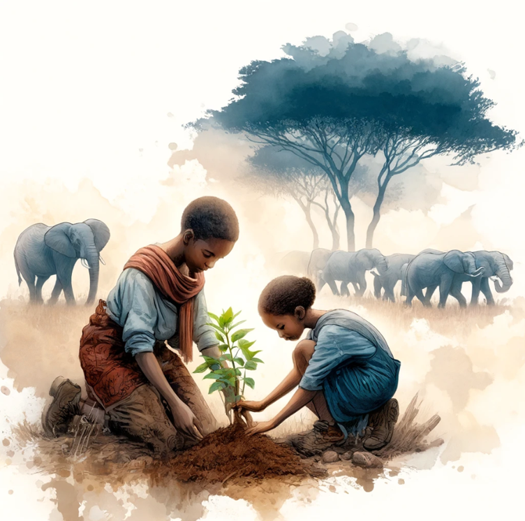
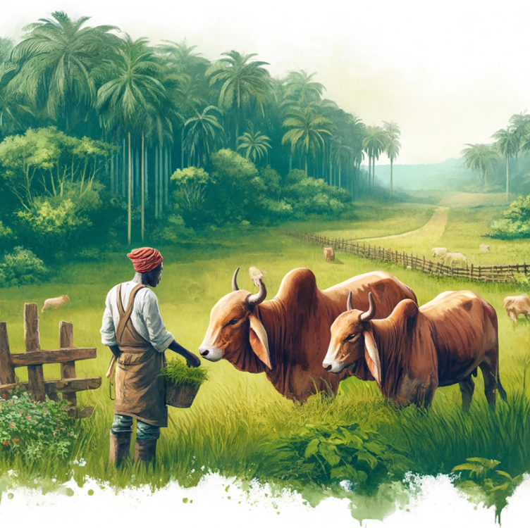
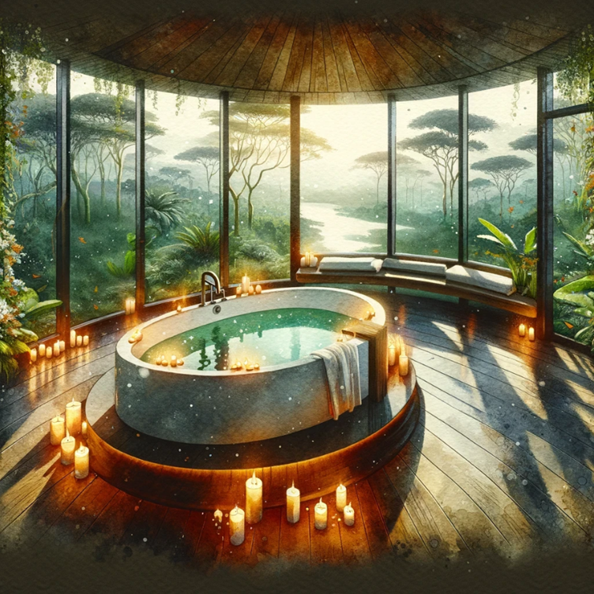
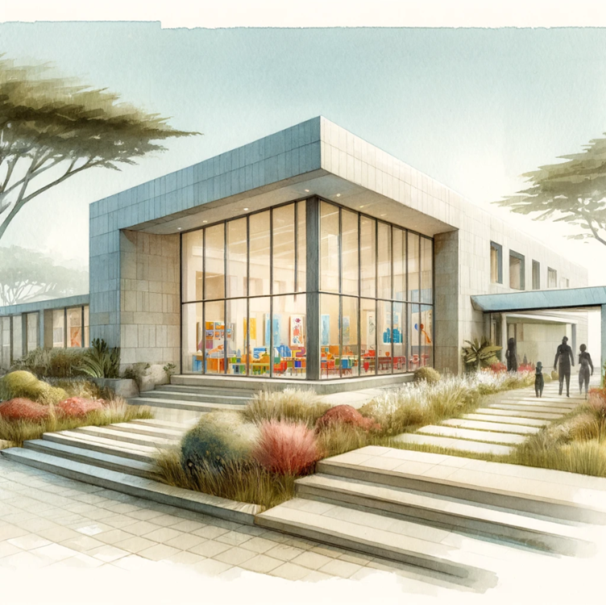

Our Expertise
Reforestation
World's Current State
GEP is Pioneering Smart Forests
Nearly 47% of the world's forests have already been lost. What remains is increasingly fragmented, simplified, and degraded. Many existing forests no longer function as complete ecological systems.
They store less carbon, regulate less water, support fewer species, and are more vulnerable to collapse. The crisis is not merely one of tree loss — it is the loss of entire ecological architectures that took millennia to develop.
GEP's response is not replanting. It is engineering. We design and build forest systems from first principles — studying what existed before, modelling what must be restored, and implementing phased ecological development that creates permanent, self-sustaining landscapes.
47%
of the world's forests have been lost
3B+
trees lost per year globally
80%
of terrestrial biodiversity lives in forests
30yr
minimum restoration horizon we design for
Forest Capabilities
Four Forest Systems
Each forest type is engineered for its ecological context, economic function, and long-term performance — not planted for optics.

Type 01
Primary Forests
Full-canopy primary forest systems designed to restore maximum biodiversity, carbon density, and ecological function across large contiguous landscapes.

Type 02
Agro Forests
Integrated forest-agriculture systems that produce food and income while restoring soil health, biodiversity corridors, and water regulation across working landscapes.

Type 03
Food Forests
Perennial food production systems layered like a natural forest — delivering food security, nutrition diversity, and community self-sufficiency while building ecological resilience.

Type 04
Park Forests
Managed forest landscapes that combine ecological restoration with ecotourism, community stewardship, and long-term land-use frameworks aligned with national park objectives.
How We Work
The Expertise Behind Every Project
- GEP's work is guided by experienced agronomists who understand species selection, land productivity, remediation, soil systems, and long-term ecological performance in complex environments.
- Projects are informed by permaculture and regenerative land-use experts, ensuring systems are resilient, biodiverse, and designed to work with natural processes rather than conventional planting models.
- GEP consults leading scientists across ecology, forestry, soil science, hydrology, biodiversity, and climate to inform design decisions and validate long-term outcomes.
- Wherever possible, GEP works with local contractors, communities, and regional experts to ensure ecological relevance, operational continuity, and local stewardship — bringing in outside expertise to fill gaps and create cross-cultural knowledge repositories.
- This extends to local universities and research institutions to support data collection, research, and capacity building for the region.
- All of our forests are designed to create durable local employment, develop technical skills, and embed long-term land stewardship within communities.
Our Approach
Holistic Forest Growth
Each project begins with fundamental questions that most restoration programmes never ask.
What existed here before?
We research the pre-degradation ecology of every project site — understanding the native species assemblage, structural complexity, and ecosystem functions that once existed.
What functions must this forest perform?
Forest design is driven by ecological objectives — carbon sequestration, water regulation, biodiversity recovery, soil formation — not planting targets or coverage optics.
What role does it play economically?
Every forest is paired with a circular economic framework. Local communities must have a sustainable economic relationship with the land for stewardship to last across generations.
How do we engineer it to last?
Using our proprietary ecosystem-intelligence platform, we model succession pathways, species interdependencies, and long-term performance before a single seed is planted.
Interested in a reforestation project?
We work with governments and institutional partners on projects from 10,000 to multi-million hectares.